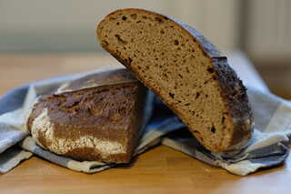

Gesunde Rezepte für Sauerteigbrot und Weiteres
Heute habe ich ein Weizenvollkornbrot mit Roggen gebacken. Das Brot ist locker und luftig, und durch den Roggen sehr saftig und bleibt lange frisch. Das Brot ist durch die lange Gare sehr mild, der Roggen verleiht dem Brot einen besonderen Geschmack.
Alle Zutaten für den Sauerteig mischen und an einem warmen Ort 5-6 Stunden aufgehen lassen.
Eine Stunde, bevor der Sauerteig reif ist, alle Zutaten für die Autolyse mischen, bis alles Mehl eingearbeitet ist. Ein ausgedehntes Kneten ist nicht erforderlich. Dieser Schritt dient dazu, dass das Mehl quillt und anfängt, eine Glutenstruktur aufzubauen. Durch die Zugabe von Sauerteig wird dieser Prozess entschläunigt oder sogar umgekehrt (wenn der Sauerteig viel Säure aufweist), daher ist die Autolyse wichtig.
Nach der Autolyse den Sauerteig und das Salz in den Teig einarbeiten, dabei bei Bedarf 10-30 g Wasser beigeben. Der Teig sollte nicht zu fest, aber auch nicht so weich sein, sodass er seine Form noch gut behält.
Per Hand oder mit einer Knetmaschine einige Minuten kneten, bis der gesamte Sauerteig und das Salz eingearbeitet sind.
Nun den Teig abgedeckt 2-3 Stunden aufgehen lassen. Währenddessen 2-3 mal dehnen und fahlten. Die Gärzeit hängt von der Temperatur ab; je wärmer, desto schneller geht der Teig auf. Der Teig sollte nach der Stockgare sehr elastisch und ein wenig aufgegangen sein.
Nun den Teig auf eine unbemehlte Arbitsfläche geben und mit einer angefeuchteten Teigkarte zu einer Kugel formen. Den Teig etwa 10-20 Minuten ruhen lassen.
Währenddessen ein Gärkörbchen bemehlen oder mit einem bemehlten Tuch auslegen.
Den Teig bemehlen und wenden und vorsichtig zu einer Kugel oder zu einem länglichen Laib formen (je nach Gärkorb) und in den Gärkorb setzen.
Nun folgt die Stückgare. Dazu den Teig entweder bei Raumtemperatur etwa 60-90 Minuten gehen lassen ODER den Teig im Kühlschrank bei etwa 3-4 Grad 12 Stunden gehen lassen. Letztes sort für ein intensiveres Aroma und weniger Säure.
Den Backofen mindestens 45 Minuten auf 250 Grad aufheizen lassen. Optional einen Gusseisentopf oder ein Pizzastahl/-stein mit aufheizen.
Den Teiglich vorsichtig auf die Backunterlage stürzen und mit einer Rasierklinge oder einem sehr scharfen Messer flach einschneiden. (Abgedeckt) etwa 20 Minuten backen, Die Abdeckung entfernen und bei 220 Grad 20-30 Minuten fertig backen, bis das Brot die gewünschte Bräunung hat. Vor dem Verzehr vollständig abkühlen lassen.